<div class="container">
	<section>
		<div class="outerDiv">
			<div class="innerDiv">
				<div class="pixWrap">
					<figure class="pix" style="max-width: 1200px;">
						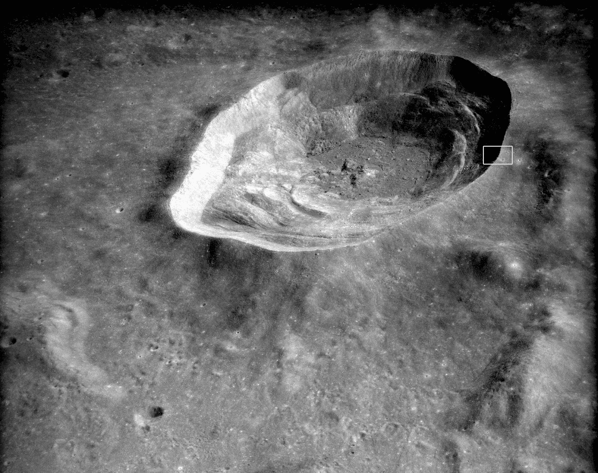
						<figcaption>This is the far north end of a frame taken by the
							<a href="http://www.lpi.usra.edu/lunar/missions/apollo/apollo_16/experiments/mpc/">
							Apollo 16</a><a href="https://history.nasa.gov/afj/simbaycam/itek-pan-camera.htm">
								 panoramic camera</a>. Each frame covers a ground area 320 km long and 20 km wide, with the smallest detail recorded being about 2 m across - almost as good as the resolution of the Lunar Reconnaissance Orbiter, whose best images have pixels equal
							to 50 cm on the ground. The location of 'downtown' Cernan's Promise is indicated.
						</figcaption>
						<p>
							The anatomy of a crater is really clear here. The rim remains sharp, and all the features clear. It is younger than most lunar craters, but still 2.2 to 2.8 billion years old. The age when the Moon was being battered by meteors all the time had long since
							ended when the Lalande impact occurred. The way the surrounding ground was raised near the rim, and thickened by a carpet of blast debris, is visible in the slope upwards to the rim extending 3 or 4 km outside the crater. The line where the granular
							layer of the ground ends and solid bedrock begins is evident where a pretty even, flat slope suddenly switches to a series of scallops and shelves that then descend at a much shallower angle towards the crater floor. The difference is especially
							dramatic on the south and west walls. The flat crater floor clearly demarks where lava and debris pooled after the blast. The lava was created by the energy of the explosion - the impacting asteroid would have been between 1 and 2 km wide and moving
							at something like 20 or 30 km/s. The central mountains show where the shockwaves from the blast caused the ground to rebound and well up.
						</p>
						<p>
							The Apollo 16 service module took 1435 images of the lunar surface during its 3 days in lunar orbit. The image above is from one of two taken of the area during the last orbit recording these photos. It shows about a tenth of the full image. These photos
							were designed to be combined in pairs to produce a stereoscopic image of the surface - the kind that look 3D when viewed with those red-and-blue glasses. (Yes, i'll do that when i have a chance and figure out how.) The full images from this camera
							looked like the one below, which is the pair of the image above:
						</p>
					</figure>

					<figure class="pix">
						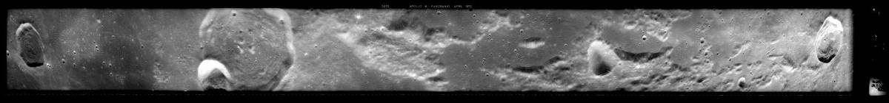
						<figcaption>Each of these is a swath showing 12&deg; of latitude and about 1&deg; of longitude. Note how much the perspective changes between the middle and the edges. This is an extreme wide-angle view. </figcaption>
						<p>
							The exposure in the 2nd image of the pair is higher. A lot more detail is visible in the shadows, but the bright areas are washed out. The area of greatest interest is in the shadows of the crater's east wall, that's where the galleries of Cernan's Promise
							go. So, i got the highest resolution image available of that section, and rotated and cropped it to take a good look:
						</p>
					</figure>

					<figure class="pix" style="max-width: 1618px;">
						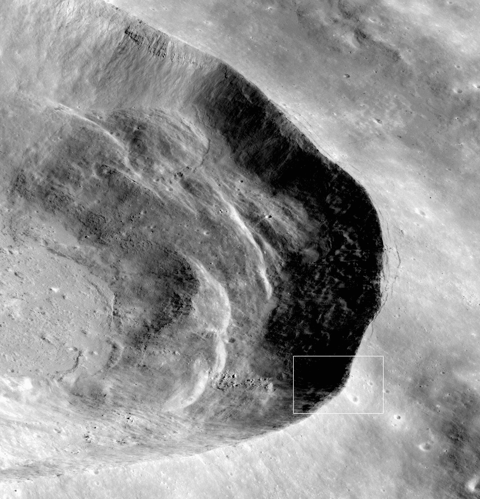
						<figcaption>For the complete orginal file, totally zoomable, with all the metadata and a set of download choices, go here -
							<a href="http://wms.lroc.asu.edu/apollo/view?image_name=AS16-P-5401">
							AS16-P-5401</a>. This is the sort of awesomeness you find deep in the rabbit-holes of the <a href="http://lroc.sese.asu.edu/">LROC
							website</a>. The image here is best viewed by right-clicking it and choosing 'view image' or 'open image' in your browser, as it is large.
						</figcaption>
						<p>
							This image was taken when the sun was 37&deg; above the horizon. (To be precise, at 11:19:13 pm GMT on April 24th, 1972. It was a Monday.) So from the shadows on the east wall it's clear it's inclined almost exactly 37&deg; on average. The wall must be
							a little steeper in that black puddle where the galleries of Cernan's Promise will be.
						</p>
						<p>
							The shot shows well the collection of house- to barn-size boulders below the colony site. Perhaps they were created when the large crater just by the rim, inside the indicator square (and nicknamed Teacup), was created. They look like they rolled down
							the slope, and that jibes with the slight inward dip in the crater rim there, and the flattening at the top of it, to say the impact shook material loose and it pooled down where the crater wall begins to flatten out, against those rocky shelves.
							All the craters that close to Lalande are younger than it is, otherwise the debris thrown up by the asteroid that created Lalande would have filled them in.
						</p>
						<p>
							Maybe the layered rocky shelves visible here indicate interfaces between strata with different mineral compositions, or maybe they are just where the rock was flawed due to the particular way it shifted around as it cooled solid, a few billion years ago
							when this basalt lava sea formed, and the impact blast fractured off the more superficial material there. On average the granular layer is about 1 km deep. 'Granular' refers to chunks of any size, as opposed to rock that is continuous, which is
							bedrock. Nearer the bottom of that layer the chunks are mostly boulders
							<sup class="note tooltip" data-tooltip-content="#Crust">
							[1]</sup><sup class="note tooltip" data-tooltip-content="#Ap17Seismic">
							[2]</sup>
						</p>
					</figure>
					<div class="tooltip_templates">
						<span id="Crust">
							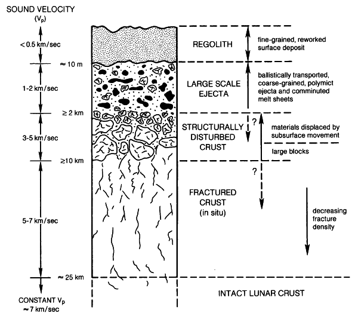
							<p>
							How the lunar surface changes with depth. From the
								<a href="http://www.lpi.usra.edu/publications/books/lunar_sourcebook/pdf/Chapter04.pdf">
								Lunar Sourcebook</a>, ch. 4 page 93. This is a 'typical' profile which
								naturally changes a lot depending on the particular history of an area.
							</p>
						</span>
					</div>
					<div class="tooltip_templates">
						<span id="Ap17Seismic">
							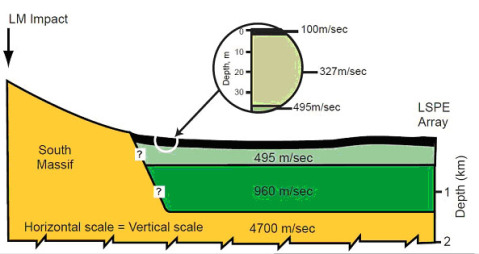
							<p>
							The structure of the ground under Taurus-Littrow, the landing
							site of Apollo 17. The graphic is from the
							<a href="https://moonzooblog.wordpress.com/2012/12/15/december-15-measuring-the-regolith-thickness-at-the-apollo-17-site/">
								Moonzoo blog</a>
							</p>
						</span>
					</div>
					<figure class="pix" id="nightTemp" style="max-width: 750px;">
						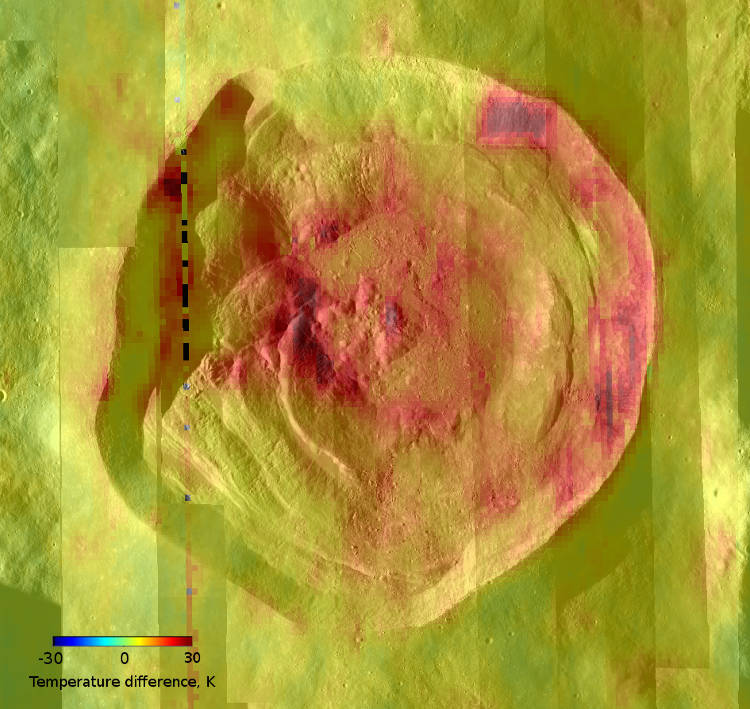
						<figcaption>Map of nighttime soil temperatures by the Lunar Reconnaissance Orbiter Diviner instrument. Each pixel the instrument records is about 200 m across.
						</figcaption>
						<p>
							Large rocks stores heat better than small grains. The spots that were recorded as being hottest in the image above correspond well to areas where LRO photos show lots of boulders or talus slopes (inclines composed of rocky debris). So the hotspot down
							the crater wall stays about 30 K warmer (54&deg;F) than the rim at Cernan's Promise overnight, but at its coldest, that warm spot is still about -135&deg;C (-275&deg;F). By noon it is 115&deg;C (240&deg;F).
						</p>
					</figure>
					<figure class="pix" style="max-width: 750px;">
						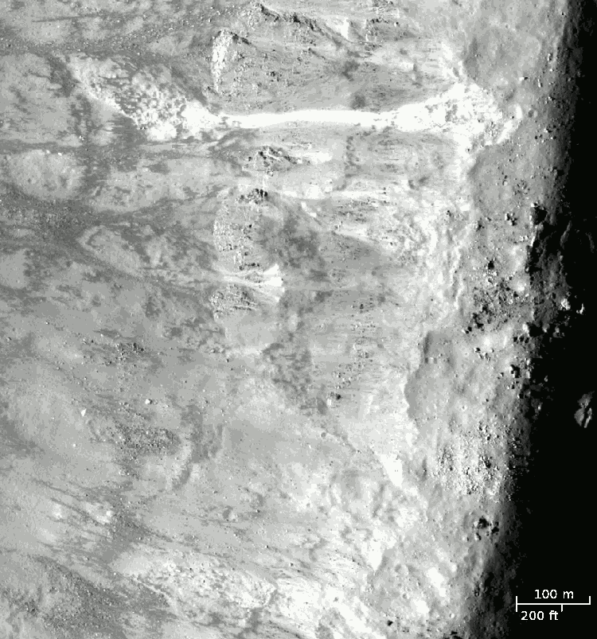
							<figcaption>Evening image of the Cernan's Promise site by the Lunar Reconnaissance Orbiter.
							</figcaption>
							<p>
								Outside the lip of the crater is in darkness. About 100 to 200 m inside the lip there is a wavy dividing line where the wall gets steeper, you can tell because its west side is brighter where material has slumped downwards and there are even several landslides.
								The area between that dividing line and the crater lip is the flattened rim area visible in the first of this set of images. That division exists around the majority of the east and northeast walls. It must correspond to a change in density, meaning
								a change in composition or an increase in large fragments. Taken together, the photos indicate this division is about 50 or 60 m below the surface outside the rim.
							</p>
							<p>
								The material that has crumbled is bright because it's fresh, relatively speaking. The faces of those chunks and particles may have been exposed to the sun and sky for less than a billion years. Exposed regolith cracks ever more with the thermal cycle
								from very hot to very cold every day, and fragments thanks to steady bombardment by very small meteorites micrometers to centimeters in size, and loses its lustre. Fresh material reflects light better. By contrast, dark patches show where the
								ground is covered by larger chunks - pebbles and small rocks. The gaps between these larger fragments are in shadow so these areas look darker.
							</p>
					</figure>

					<figure class="pix" style="max-width: 1100px;">
						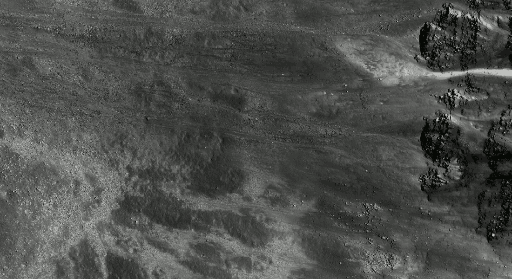
							<figcaption>Noon image near the colony site. Also by the LRO, as are the remaining black and white images. They are from <a href="http://target.lroc.asu.edu/q3/">QuickMap</a>. All the LRO images seamlessly laid onto a globe of the Moon. It's for people like
								us.
							</figcaption>
							<p>
								The lion's tail shape of the landslide shown at top right of this image is also in the previous image. So, you can see how different the Moon looks at different times of day. Noon is when you can see what shade a material is, instead of the shade value
								of an area being determined by shadows cast between particles. Suddenly, the long, slender rivulets formed by material rolling down the crater wall are visible. They suggest to me that little patches of stone and regolith crumble occasionally,
								triggered by the vibrations of a moonquake or an impact in the area, and then roll quite far before coming to rest. Their fluid look indicates a high proportion of small grains in the material slipping down the face.
							</p>
							<p>
								Things like this are important to consider when you are deciding how to send rovers into this terrain. This is landslide territory. The galleries of Cernan's Promise go right through the middle of it, in fact going through the next gap below the lion's tail one to reduce excavation through those outcroppings that look so rocky. The mass and activity of a rover might not be enough to destabilize the slope, or your extremely expensive rovers might be at serious risk of crushing or burial. It will have to be done carefully.
							</p>
							<p>
								Those outcroppings are interesting. This image reveals how vertical their faces are, implying the material there is quite cohesive. I don't want to call it rock, because it is too shallow to be a layer of solid rock, and there are no processes on the	Moon that produce sedimentary rock. That requires water. Once that occured to me, as i was writing this up, i went on a little mission to find out what that material could be, then. That got nowhere, but led me to other interesting things that were productive. This happens to me all the time. Anyhow, i don't think that material can be supposed to be like rock, but instead like an extra-compacted version of regolith. In particular, the thermal properties of it need to be assumed to be pretty similar to hard-packed regolith, meaning it is more like insulation than a thermal sink.
							</p>
					</figure>
					<figure class="pix" id="thorium" style="max-width: 703px;">
						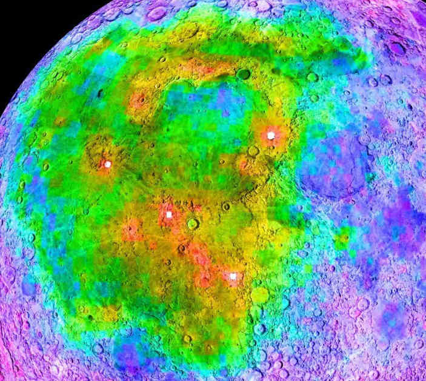
						<figcaption>Map of distribution of thorium on the Moon, by NASA's Clementine probe</figcaption>
							<p>
       </p>
					</figure>
					<figure class="pix" id="boulders" style="max-width: 750px;">
						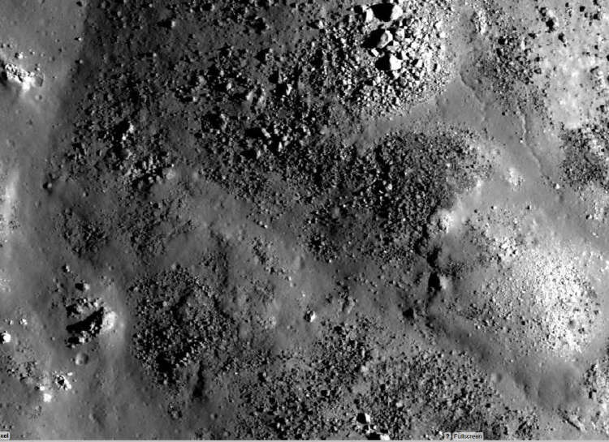
						<figcaption>captions coming</figcaption>
					</figure>
					<figure class="pix" style="max-width: 750px;">
						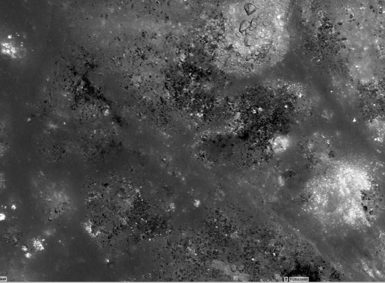
						<figcaption>captions coming</figcaption>
					</figure>
					<figure class="pix" id="BigLal">
						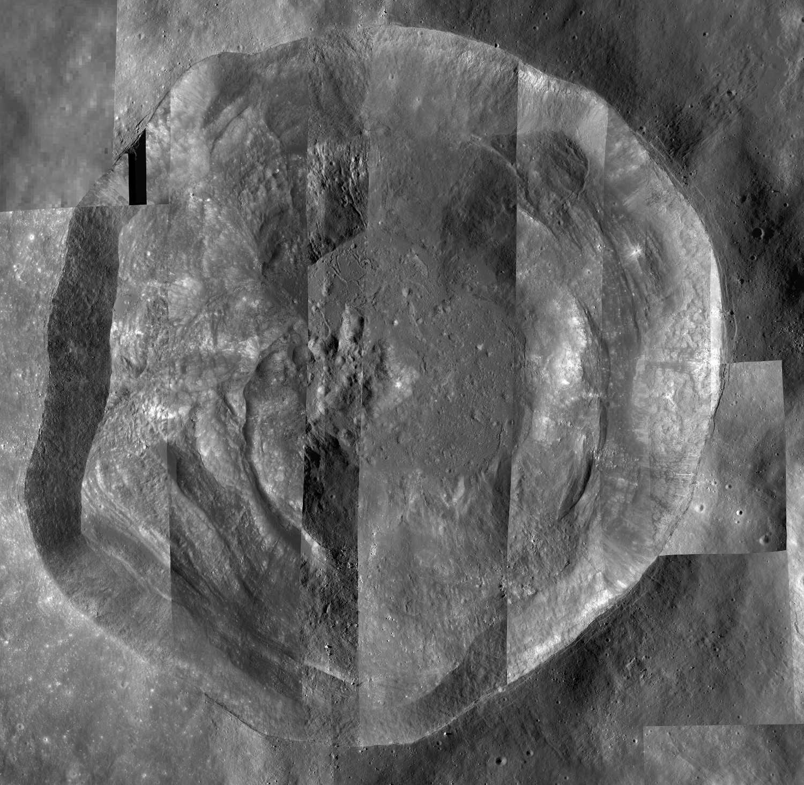
						<figcaption>captions coming</figcaption>
					</figure>
				</div>
			</div>
		</div>
	</section>
</div>


</body>

</html>
